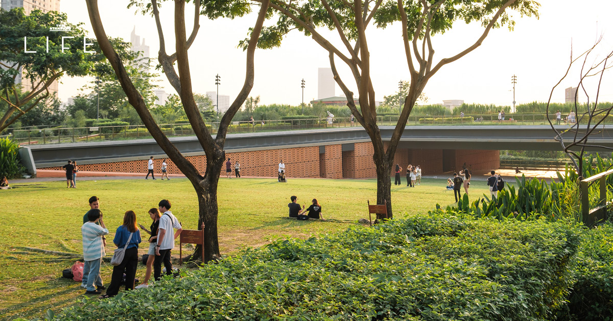
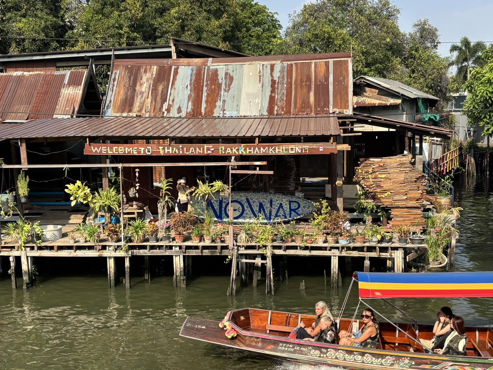

สถานที่แนะนำหมวดพักผ่อน
จุดถ่ายภาพและเดินเล่นชิลๆ ในกรุงเทพฯ

สวนป่าเบญจกิติ (Benchakitti Forest Park)
สวนสาธารณะขนาดใหญ่ใจกลางเมืองที่มีเส้นทางเดิน Skywalk สวยงาม ท่ามกลางธรรมชาติบึงน้ำและเกาะพืชพรรณ เหมาะกับการออกกำลังกายและถ่ายภาพมินิมอล

ถนนเยาวราช (Chinatown)
ไชน่าทาวน์เมืองไทยที่คึกคักยามค่ำคืน เต็มไปด้วยป้ายไฟนีออนและร้านอาหารอร่อยระดับมิชลิน บรรยากาศสุดคูลสำหรับการถ่ายภาพแนวสตรีท

อุทยาน 100 ปี จุฬาลงกรณ์มหาวิทยาลัย
พื้นที่สีเขียวใจกลางเมืองที่ออกแบบอย่างทันสมัยด้วยลานหญ้าลาดเอียง เหมาะสำหรับนั่งพักผ่อน รับลมยามเย็น ชมอาทิตย์ตกดิน และยังตั้งอยู่ติดกับย่านอาหารสตรีทฟู้ดชื่อดังอย่างบรรทัดทอง

สวนหลวง ร.9 (Suan Luang Rama IX)
สวนสาธารณะและสวนพฤกษศาสตร์ที่ใหญ่ที่สุดในกรุงเทพฯ โดดเด่นด้วยหอรัชมงคลกลางน้ำ พรรณไม้นานาพันธุ์ และสวนชาติต่างๆ เหมาะแก่การปิกนิกและถ่ายรูป

มิวเซียมสยาม (Museum Siam)
พิพิธภัณฑ์การเรียนรู้สไตล์โมเดิร์นตั้งอยู่ในตึกทรงยุโรปคลาสสิก ลานหญ้ากว้างหน้าตึกเป็นจุดนั่งพักผ่อน ถ่ายรูปเช็กอินที่มีเสน่ห์มากๆ ทั้งกลางวันและกลางคืน

ย่านทรงวาด (Song Wat Road)
ถนนสายประวัติศาสตร์ริมแม่น้ำเจ้าพระยาที่กลายเป็นคอมมูนิตี้สุดชิค รวมคาเฟ่วินเทจ แกลเลอรี และตึกเก่าสไตล์ตะวันตก-จีน เหมาะกับการเดินสโลว์ไลฟ์

สวนวชิรเบญจทัศ (สวนรถไฟ)
สวนสาธารณะยอดฮิตสำหรับปั่นจักรยาน มีลานหญ้ากว้างใต้ร่มไม้ใหญ่ และอุทยานผีเสื้อและแมลงกรุงเทพฯ บรรยากาศร่มรื่นเหมาะกับการพักผ่อนหย่อนใจ

ตลาดน้ำคลองบางหลวง & บ้านศิลปิน
ชุมชนริมคลองโบราณย่านธนบุรี ชมบ้านศิลปินร้อยลูกปัด ทำงานศิลปะ DIY นั่งชมวิววิถีชีวิตริมน้ำแบบไทยๆ ฮีลใจในวันหยุด
📸 บรรยากาศพิกัดถ่ายรูปยอดฮิต
สามารถใช้นิ้วหรือเมาส์เลื่อนชมภาพถ่ายบรรยากาศในแนวนอนได้เลยครับ